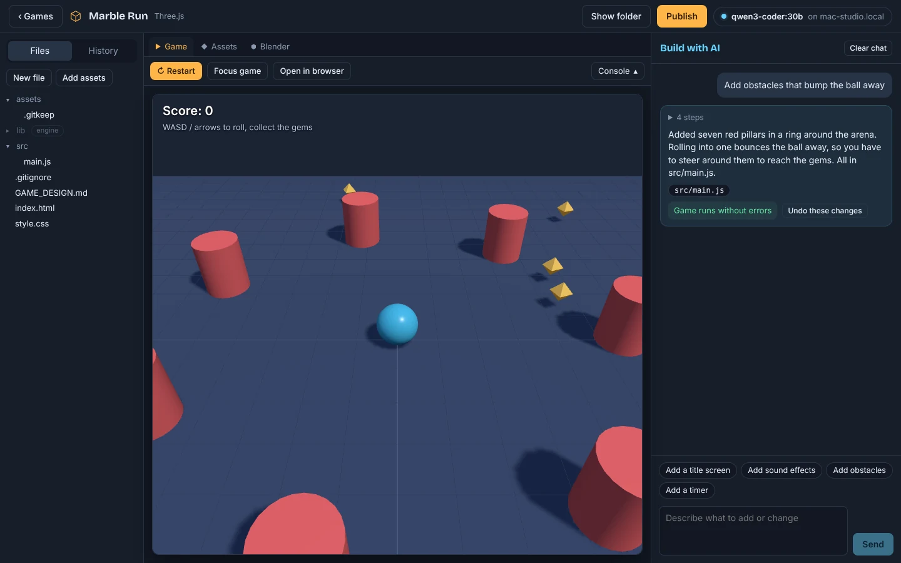
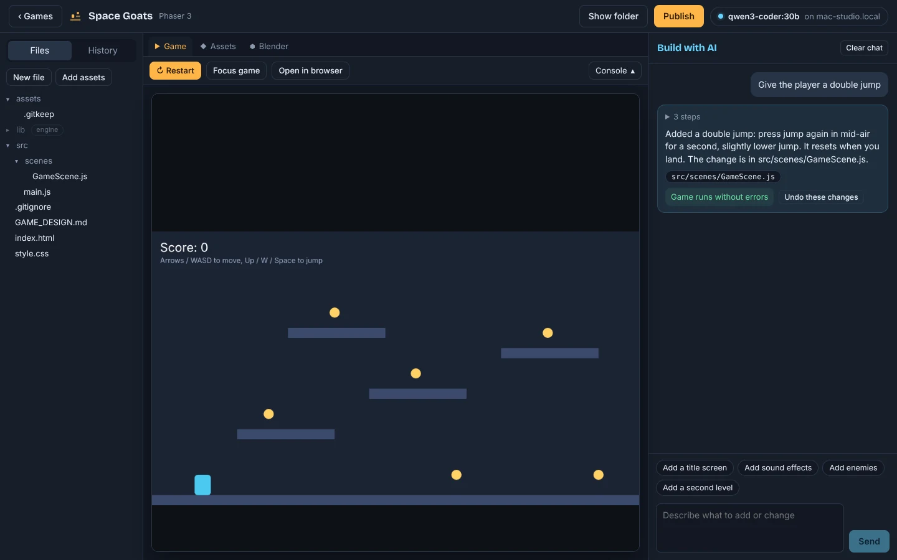
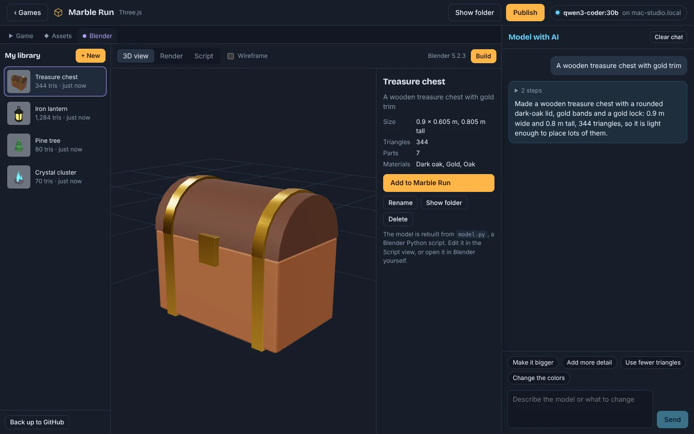
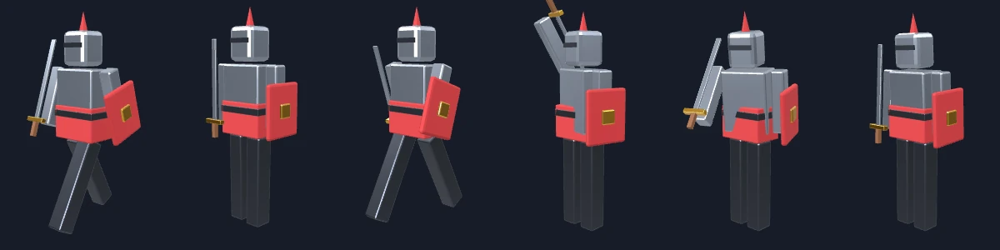
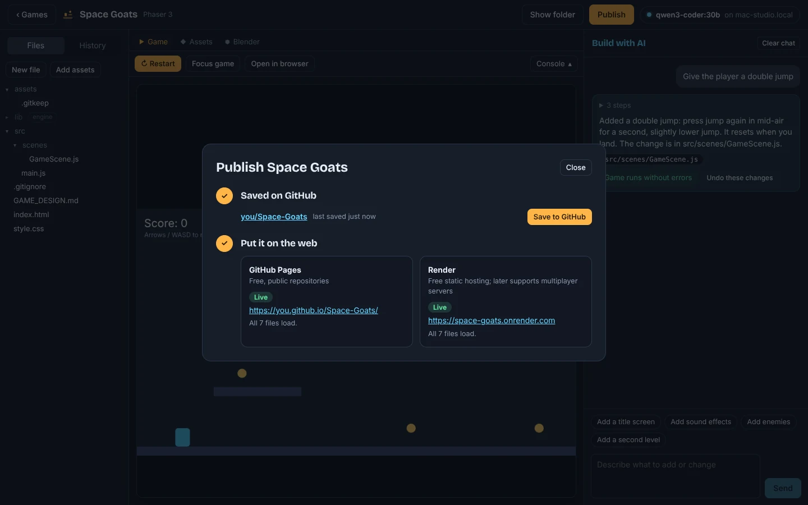

Describe a game. Watch it get built.
Gamesmith is a free Windows app for making browser games with an AI that runs on your own computer. It writes the code, plays the game to check for errors, fixes them, and puts the result on the web when you're ready.
Windows 10 and 11, 64-bit

How it works
-
Say what you want
Start from a 2D or 3D template, or bring in a game you already have. Then ask for changes in plain words: "add enemies that patrol the platforms."
-
It builds and tests itself
The AI edits the code, runs the game in the preview, reads any errors, and fixes them before it hands it back. Every change can be undone with one click.
-
Put it on the web
Save to your GitHub account and publish to GitHub Pages or Render. Each later save updates the live game, and Gamesmith checks every file loads.
What's in it
Everything from the first idea to a link you can send people, in one window.
2D and 3D games, built by asking
Games run on Phaser for 2D and Three.js for 3D, both built in, so they work offline and publish as plain web files.
- Live preview that reloads as files change, with the game's console beside it
- The AI tests its own work and fixes what breaks, up to three rounds by default
- A real code editor (the one from VS Code) whenever you want to look

Runs on your own hardware
Point Gamesmith at a model on your PC or another computer on your network, such as a Mac Studio or a gaming PC. No subscription, and your code never goes to a cloud service.
Any server that speaks the OpenAI API works:
- Ollama
- LM Studio
- llama.cpp
- MLX
- vLLM
Make your own 3D models
Describe a model and the AI builds it in Blender, the free 3D app, which Gamesmith runs in the background. You never need to learn Blender, and Gamesmith can download it for you. Ask for smooth, organic shapes, real photo-scanned surfaces from Poly Haven, or a whole landscape of hills, mountains, islands or dunes.
- Spin it around in the 3D view and see its real size and triangle count
- Keep it in your own library and add it to any game
- Back the library up to a private GitHub repository

Bring them to life
Ask for movement: an idle sway, a walk cycle, a sword swing, a lid that opens. The AI gives the model a skeleton in Blender and keys each move, and you play every animation in the 3D view.
Or act it out yourself: record a move with your webcam, and Gamesmith tracks your body on your own computer and puts the move on any person-shaped character. It can even make a blocky character that looks like you, with your proportions, your outfit's colors and your face.
Animations travel inside the model file, and when you add it to a game, that game's AI is told each one's name and how to play it.

Publish in a click
Sign in to GitHub once. Gamesmith creates the repository, uploads the game, and turns on GitHub Pages (free) or Render. After that, "Save to GitHub" updates the live game.
Once a site says it's live, Gamesmith loads every file from it and tells you if anything is missing, so you find out before your friends do.

Free assets, built in
Search Poly Haven's free models, textures and skies, and Poly Pizza's low-poly models, from inside the app. Credits are written for you.
Bring in what you have
Open a game from GitHub, a folder, or a single HTML file an AI chat made for you, and keep building on it.
Games with their own server
Multiplayer games with a Node.js server run too. Gamesmith installs packages, starts the server and restarts it when you change its code.
Undo anything
Every AI change is saved as a version. Step back through History, or undo the last request from the chat.
Asset packs
Drop in a zip from Kenney or itch.io. Gamesmith unpacks it, reads the license, and tells the AI what's inside.
Your files stay yours
Games are ordinary folders of HTML and JavaScript. Open them in any editor, host them anywhere.
Get started
-
Download and run the installer
It installs for your Windows account only and adds a Start menu and desktop shortcut. No admin rights needed.
-
Start a model server
Install Ollama or LM Studio on this PC or another one, and load a coding model that supports tool calling. A Qwen coder model is a good start.
-
Connect and build
In Gamesmith, open Settings, enter the server's address, click Test connection, and pick the model. Then click New game.
Windows may show "Windows protected your PC" the first time, because the installer isn't signed with a paid certificate yet. Click More info, then Run anyway.
- Windows 10 or 11, 64-bit
- The app itself. Games you make run in any modern browser.
- An AI model server
- Local or on your network. More memory means bigger, smarter models; a 30B-class coding model is a good balance of speed and quality.
- Optional: a GitHub account
- To save games online and publish them. Free.
- Optional: Render
- For hosting games with their own server. Static games can use GitHub Pages instead.
- Optional: Blender
- For making 3D models. Gamesmith downloads the official portable version (about 400 MB) when you first open the Blender tab.
Questions
Does it cost anything?
No. Gamesmith is free, the AI runs on your own hardware, and GitHub Pages hosting is free for public repositories. Render has a free tier for small sites.
Does my code get sent anywhere?
Only to the model server you choose, which can be on your own computer. Nothing goes to GitHub or a host until you click Save or Publish.
Which model should I use?
A coding model that supports tool calling, such as a Qwen coder model. Give it at least 32,000 tokens of context; Gamesmith's README explains how to set that in Ollama and LM Studio.
Can I use a cloud AI instead?
Any OpenAI-compatible endpoint works, so yes, if you have one. Choose "Custom URL" in Settings and paste the address and key.
Is there a Mac or Linux version?
Not as an installer yet. Gamesmith is an Electron app, so it runs from source on Mac and Linux with Node.js: clone the repository, then run npm install and npm run dev.